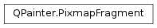

QPainter.PixmapFragment¶
Note
This class was introduced in Qt 4.7.
Synopsis¶
Detailed Description¶
This class is used in conjunction with the
QPainter.drawPixmapFragments()function to specify how a pixmap, or sub-rect of a pixmap, is drawn.The
sourceLeft,sourceTop,widthandheightvariables are used as a source rectangle within the pixmap passed into theQPainter.drawPixmapFragments()function. The variablesx,y,widthandheightare used to calculate the target rectangle that is drawn.xandydenotes the center of the target rectangle. Thewidthandheightin the target rectangle is scaled by thescaleXandscaleYvalues. The resulting target rectangle is then rotatedrotationdegrees around thex,ycenter point.See also
-
class
PySide2.QtGui.QPainter.PixmapFragment¶ -
class
PySide2.QtGui.QPainter.PixmapFragment(PixmapFragment) Parameters: PixmapFragment – PySide2.QtGui.QPainter::PixmapFragment
-
PySide2.QtGui.QPainter.PixmapFragment.x¶
-
PySide2.QtGui.QPainter.PixmapFragment.y¶
-
PySide2.QtGui.QPainter.PixmapFragment.sourceLeft¶
-
PySide2.QtGui.QPainter.PixmapFragment.sourceTop¶
-
PySide2.QtGui.QPainter.PixmapFragment.width¶
-
PySide2.QtGui.QPainter.PixmapFragment.height¶
-
PySide2.QtGui.QPainter.PixmapFragment.scaleX¶
-
PySide2.QtGui.QPainter.PixmapFragment.scaleY¶
-
PySide2.QtGui.QPainter.PixmapFragment.rotation¶
-
PySide2.QtGui.QPainter.PixmapFragment.opacity¶
-
static
PySide2.QtGui.QPainter.PixmapFragment.create(pos, sourceRect[, scaleX=1[, scaleY=1[, rotation=0[, opacity=1]]]])¶ Parameters: - pos –
PySide2.QtCore.QPointF - sourceRect –
PySide2.QtCore.QRectF - scaleX –
PySide2.QtCore.qreal - scaleY –
PySide2.QtCore.qreal - rotation –
PySide2.QtCore.qreal - opacity –
PySide2.QtCore.qreal
Return type: PySide2.QtGui.QPainter::PixmapFragmentThis is a convenience function that returns a
QPainter.PixmapFragmentthat is initialized with thepos,sourceRect,scaleX,scaleY,rotation,opacityparameters.- pos –
© 2018 The Qt Company Ltd. Documentation contributions included herein are the copyrights of their respective owners. The documentation provided herein is licensed under the terms of the GNU Free Documentation License version 1.3 as published by the Free Software Foundation. Qt and respective logos are trademarks of The Qt Company Ltd. in Finland and/or other countries worldwide. All other trademarks are property of their respective owners.